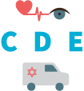
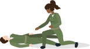
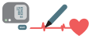
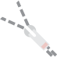
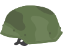
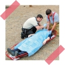

מבוא

בשיעור זה נלמד את המשך הסכמה - שלבים :

בשלבים אלו, נשלים את ההערכות של הפצוע, נטפל במידת הצורך ובעיקר נכין אותו לפינוי.
Circulation

מחזור הדם
בניגוד לשלב ה-S בו אנו עוצרים דימומים פורצים ומסכני חיים שיובילו למוות בתוך שניות או דקות
ספורות,
בשלב זה אנו עוצרים דימומים שאינם פורצים ומסכני חיים, אלו דימומים שיובילו להדרדרות במצב
הפצוע
כעבור זמן.
בנוסף, אנו מעריכים את המצב ההמודינמי של הפצוע ומתחילים להכין את הפצוע לפינוי.

סריקת דימומים
בשלב זה נסרוק דימומים באמצעות הסתכלות, סריקה ומישוש.
נתחיל מהגפיים התחתונות(מלמעלה למטה), בהן יכולים להיות דימומים לחיצים משמעותיים.
במידה ונמצאים ליד הראש נבדוק קודם את הראש ואז את הגפיים ומשם את כל שאר הגוף.
במידה ונמצאים ליד הראש נבדוק קודם את הראש ואז את הגפיים ומשם את כל שאר הגוף.
סריקת הגפיים תתבצע ב - 360 מעלות כאשר נסחט את הגפה לאורך כל סריקתה.
בחושך יש לבצע סקירה יסודית של הפצוע באמצעות מישוש על מנת לאתר דימומים.

אם החובש כבר מטפל באזור הראש - אפשר להתחיל לסרוק מהראש.
עצירת דימומים
עצירת הדימום בשלב ה-C תתבצע בעדיפות ע”י לחץ ישיר באמצעות F.C/C.G, אך כמובן ואם קיימת התוויה רפואית
או מבצעית, נשתמש ב-CAT.
חובש רשאי לבצע packing באזורי מעבר.
במידה שהתגלה דימום יש לעצור אותו מיידית ולאחר מכן להמשיך בסריקת הדימומים.
התרשמות מבטן ואגן
חשוף את הבטן והאגן ע”י הפשטה, פתח את החגורה והפשל את המכנס אם יש צורך.
נבצע בדיקה ע”י הסתכלות על הבטן ועל האגן של הפצוע על מנת להתרשם מפגיעה.
נחפש אחר המטומות, חורי ירי, רסיסים וכדו’.
דימום פנימי באזור זה אינו לחיץ, ולכן פצוע כזה יהיה דחוף לפינוי.
הבדיקה מתבצעת ע”י התבוננות בלבד.
אין צורך בהפשטה מלאה, רק מה שנחוץ כדי לחשוף את האזור.
בדיקת דופק כמותי
נבצע בדיקת דופק כמותית לפי דקה -
נמדוד את מספר הפעימות ב- 15 שניות ונכפיל ב- 4 (כך שנקבל דקה).
נבצע את הבדיקה בעורק הרדיאלי,
במידה ולא מצליחים להרגיש - נעבור לבדיקה בעורק הקרוטידי.
נסתמך על מספר הפעימות בלבד, ולא על עוצמתן.
ניטור לחץ דם
לחץ דם הוא המדד האמין ביותר בשטח להתרשמות ממצב ההלם,
ולכן נמדוד לחץ דם וננטר אותו לכל אורך הטיפול.

תיעוד בטופס 101
בכל טיפול בפצוע יש לתעד
בטופס 101 את כל המדדים בצורה מפורטת.
יש לזכור כי אחרי שלב זה ניתן לפנות את הפצוע,
והעברת המידע לדרגים הבאים היא קריטית.
קו פינוי מיידי
אחרי שסיימנו להעריך ולבצע את שלב ה-C בסכימה, ניתן לפנות
פצועים דחופים
באופן מיידי במידה וישנו פינוי
זמין.
פצוע דחוף = פצוע עם סכנת חיים או סכנה לאיבר
הפעולות שבוצעו עד עכשיו בסכימה הן חובה לביצוע על כל הפצועים תמיד.
Disability
מוגבלות
ע”פ הערכה בשלב זה נוכל לחשוד האם הפצוע בעל פגיעה נוירולוגית.
בדיקת חסכים נוירולוגיים - תנועת גפיים
בדיקת חסכים נוירולגיים נבצע רק במידה והפצוע בהכרה.
מטרת בדיקת החסכים נוירולגיים היא לזהות האם קיימת פגיעה בחוט השדרה של הפצוע.
מטרת בדיקת החסכים נוירולגיים היא לזהות האם קיימת פגיעה בחוט השדרה של הפצוע.
אופן ביצוע הבדיקה: נבקש מהפצוע להזיז -
יד ימין יד שמאל רגל ימין רגל שמאל
יד ימין יד שמאל רגל ימין רגל שמאל
בשלב ה-D מט”ב יבצע הערכות משלו - GCS, בדיקת אישונים והערכת כאב.
Evacuation
פינוי
בשלב זה נשלים את הפשטת הפצוע, נעצור דימומים שלא נעצרו עד כה ונכין את הפצוע לפינוי.
השלמת הפשטה
ועצירת דימומים
בשלב זה נפשיט את הפצוע במלואו (מלבד הדיסקית) על מנת לוודא שלא פספסנו אף פציעה.

בנוסף נוודא הורדה של כלל אמצעי הלחימה מהפצוע.
בזמן ביצוע ההפשטה נבצע הפיכה של הפצוע על מנת לזהות פגיעות בחלקו האחורי, כאשר את ההפיכה נבצע
ע”י
הטיית הפצוע.
לא נפנה פצוע ללא פריקת הנשק והורדת האמל”ח ממנו.
לא ניתן לעצור דימומים בגב מנק’ הפופיק ומעלה, עקב חשש להחמרת פגיעת חזה.
במידה וזיהינו דימום בשלב זה, נעצור אותו מיד עם מציאתו, בעדיפות ללחץ ישיר.
הכנה לפינוי
בתום ההפשטה ועצירת הדימומים יש לבצע כיסוי מלא של הפצוע על מנת למנוע היפותרמיה, כשאת
הכיסוי
נעשה
בצורה מקיפה ככל הניתן.
בנוסף, נקשור את הפצוע היטב לאלונקה ונחזיר לו את אמצעי המיגון - קסדה, ווסט וכו’.
נניח את הנשק בין רגליו של המטופל כשהוא פרוק נצור וכשקנה פונה כלפי כפות רגליו של המטופל.
בנוסף, נקשור את הפצוע היטב לאלונקה ונחזיר לו את אמצעי המיגון - קסדה, ווסט וכו’.
נניח את הנשק בין רגליו של המטופל כשהוא פרוק נצור וכשקנה פונה כלפי כפות רגליו של המטופל.

נכסה באמצעות שמיכת Ready Heat:
כל נפגע שסובל מהיפותרמיה
כל נפגע שסובל מהלם
(גם בהיעדר היפותרמיה) או שמנגנון פציעתו עלול לגרום להתפתחות הלם.

במידה והדיווח הוא לגורם אג"מי
נעביר דיווח ע”פ
ארבעת הממ”ים
.
כמו כן נסווג את הפצועים ע”פ קדימויות הפינוי דחוף/לא דחוף בלבד.
מי מדווח, מקום, מתאר, מספר פצועים ומצב פצועים.
במידה והדיווח הוא לגורם רפואי
נוסיף דיווח אודות אופן הפציעות, מצב ההכרה, מדדים, הדרדרות וטיפולים שבוצעו.
לגורם שאינו רפואי נסווג את הפצועים רק ע"פ דחוף / לא דחוף.

אודות
ראש מדור טי"ל: רס"ן מיגל לויתן
ניהול הפרויקט: רב"ט גל גנסין
אפיון תוצר הדרכתי: סמל נועה עובדיה
וטור' דרור אברמסון
וטור' דרור אברמסון
תכנות: סמל נועה עובדיה
עיצוב: טור' מייה ליבנה
מומחה תוכן בה"ד 10: סרן רוני ארמון
גירסה: 2020 1.0